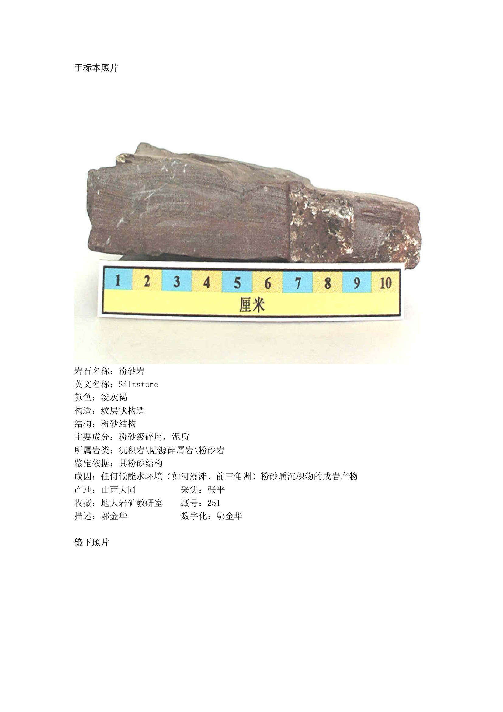
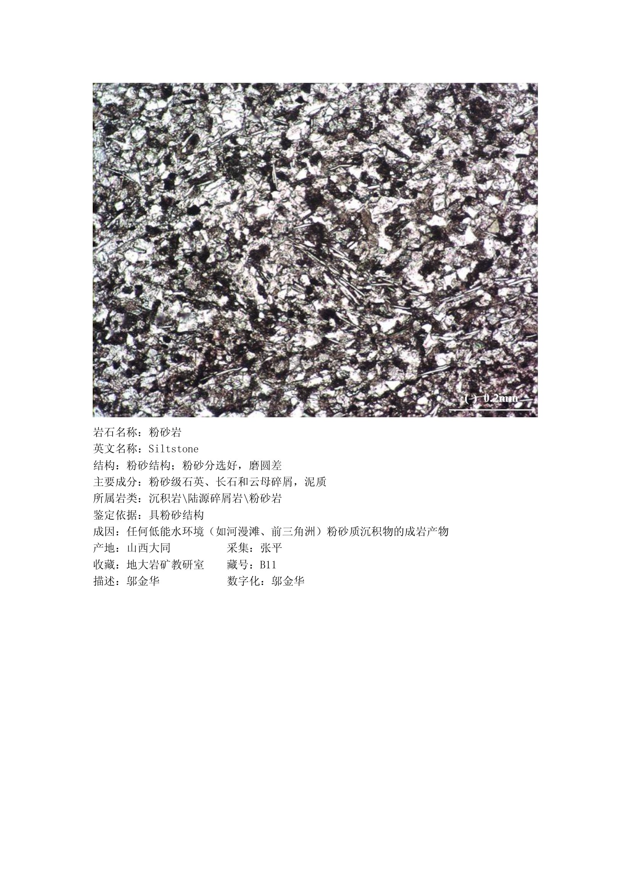

009
沉积岩
粉砂岩
共 2 页
第 1 页

第 1 页 · 点击图片可放大
第 2 页

第 2 页 · 点击图片可放大
📋 粉砂岩 · 岩石信息卡（文字版）
岩石名称
粉砂岩
英文名称
Siltstone
颜色
淡灰褐
构造
纹层状构造
结构
粉砂结构
主要成分
粉砂级碎屑，泥质
所属岩类
沉积岩\陆源碎屑岩\粉砂岩
鉴定依据
具粉砂结构
成因
任何低能水环境
产地
山西大同
采集
张平
收藏
地大岩矿教研室
藏号
251
描述
邬金华
数字化
邬金华
以上文字由图片自动识别（OCR）生成，个别字符可能有误，请以图片原卡为准。
← → 键切换上一块 / 下一块岩石